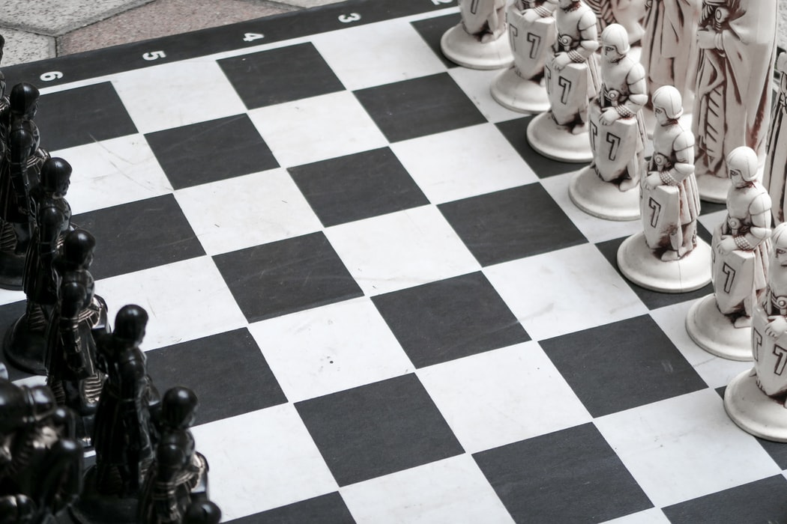

Catur (bahasa Inggris: chess) adalah permainan papan strategi dua orang yang dimainkan pada sebuah papan kotak-kotak yang terdiri dari 64 kotak, yang disusun dalam petak 8×8, yang terbagi sama rata (masing-masing 32 kotak) dalam kelompok warna putih dan hitam.
HAMPIR semua ahli sejarah di dunia yang menyelidiki asal usul catur sependapat bahwa catur berasal dari India. Dari sana catur menyebar ke barat dan ke timur. Dalam perjalanannya, catur mengalami beberapa kali perubahan peraturan permainan, sampai yang terakhir kali terjadi pada abad ke-16 (jaman Ruy Lopez) sehingga permainan catur mencapai bentuknya yang seperti sekarang.
Di jaman penjajahan Belanda di Indonesia, kebanyakan hanya orang-orang Belanda yang senang bermain catur. Pada akhir abad ke-19 bermunculan klub-klub catur di Surabaya, Magelang, Yogyakarta dan Bandung. Sampai pada tahun 1915 di Yogyakarta berdiri Nederlandsch Indische Schaakbond (NISB) atau Perkumpulan Catur Belanda Indonesia yang merupakan perkumpulan catur pertama di Indonesia dan juga merupakan cikal-bakal PERCASI, namun masih sangat sedikit orang Indonesia yang memainkan apalagi menggemari catur.
Sekitar tahun 1938 sampai pecah perang dunia kedua, jumlah penggemar catur dari kalangan orang Indonesia semakin meningkat, bahkan melebihi jumlah orang-orang Belanda (Eropa) yang berada di Indonesia. Namun ketika Jepang mengambil alih kekuasaan di Indonesia, kegiatan catur boleh dibilang terhenti sama sekali, kalaupun ada hanya bersifat lokal.
Setelah pecah revolusi fisik yang berujung pada Proklamasi Kemerdekaan Indonesia di tahun 1945, walaupun perjuangan bersenjata masih berlangsung dengan sengitnya, kegiatan catur mulai bermunculan kembali, terutama di pulau Jawa seperti di Solo, Yogyakarta dan Magelang. Atas prakarsa beberapa orang – yang bisa disebut para tokoh catur masa itu – maka pada tahun 1948 didirikanlah “Persatoean Tjatoer Seloeroeh Indonesia” (Persatuan Catur Seluruh Indonesia) disingkat PERTJASI (PERCASI). Namun karena situasi saat itu yang belum pasti karena masih dalam masa peralihan, maka barulah tanggal 17 Agustus 1950 ditetapkan sebagai tanggal resmi berdirinya PERCASI, dengan memiliki Anggaran Dasar dan Anggaran Rumah Tangga, serta berkedudukan di Yogyakarta. Terpilih sebagai Ketua Umum PERCASI yang pertama adalah Dr. Suwito Mangkusuwondo (almarhum). Kejuaraan Nasional (Kejurnas) Catur yang pertama baru bisa diadakan pertama kali pada tahun 1953 di Solo.
Pada tahun 1955 kedudukan kepengurusan induk PERCASI dipindahkan dari Yogyakarta ke Jakarta, dan dipakailah istilah “Pengurus Besar PERCASI” untuk menggantikan istilah “Kepengurusan Induk PERCASI”. Selanjutnya PERCASI mulai turut berkiprah di percaturan Internasional dan pada tahun 1960 diterima sebagai anggota Federasi Catur Internasional atau Federation Internationale Des Echecs (FIDE). Sejak saat itu PERCASI terus berkembang sebagai organisasi induk cabang olahraga catur yang solid dan memiliki kepengurusan yang jelas serta relatif tanpa masalah.Pada tahun 1955 kedudukan kepengurusan induk PERCASI dipindahkan dari Yogyakarta ke Jakarta, dan dipakailah istilah “Pengurus Besar PERCASI” untuk menggantikan istilah “Kepengurusan Induk PERCASI”. Selanjutnya PERCASI mulai turut berkiprah di percaturan Internasional dan pada tahun 1960 diterima sebagai anggota Federasi Catur Internasional atau Federation Internationale Des Echecs (FIDE). Sejak saat itu PERCASI terus berkembang sebagai organisasi induk cabang olahraga catur yang solid dan memiliki kepengurusan yang jelas serta relatif tanpa masalah.
Pada tahun 2000 catur diakui sebagai salah satu “cabang olahraga resmi” dunia (bukan lagi sekedar “permainan”) oleh Komite Olimpiade Internasional atau International Olympic Committee (IOC). Olimpiade khusus Catur diselenggarakan setiap 2 (dua) tahun sekali - bukan seperti Olimpiade multi cabang olahraga lainnya yang diselenggarakan 4 (empat) tahun sekali - dikarenakan kerumitan, keunikan dan dinamika permainan catur yang berkembang pesat seiring perkembangan teknologi komputer dunia.